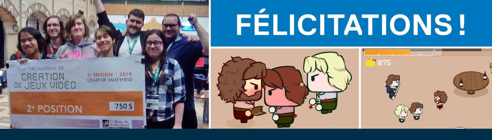
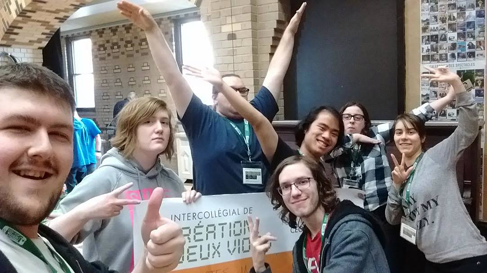
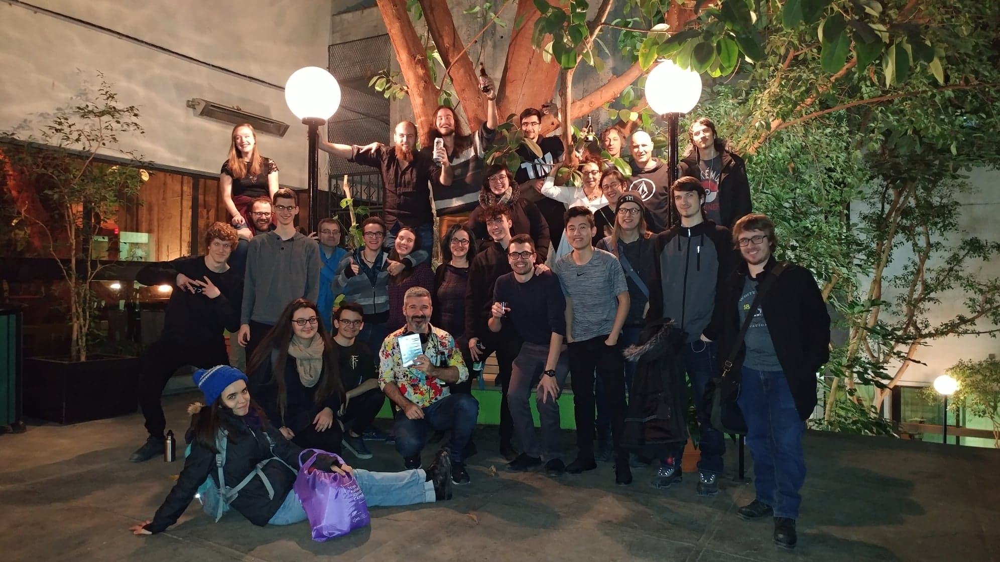

Concours
Dionne, Mathieu
L'intercollégial de création de jeux du Collège de Valleyfield est de retour cette année. L'an passé, deux équipes TIM de Maisonneuve ont remporté la première et la deuxième place... alors oui, c'est possible et vous avez les compétences pour participer!
Vous êtes en 2e ou en 3e année et l'expérience vous tente? Commencez par former une équipe et écrivez-nous ici. Nous procéderons à l'inscription par l'intermédiaire du service d'animation du collège. Normalement, une bonne partie des frais d'inscriptions devrait être payée par le collège (le montant reste à confirmer). L'expérience vous intéresse, mais vous n'avez pas d'équipe? Manifestez votre intérêt ici aussi! On pourra peut-être former une autre équipe.
Les équipes peuvent mixtes (étudiants de 2e et 3e ensemble). Pour les étudiants de première année, ce n'est pas impossible, mais votre formation n'est pas très avancée encore... Voici toutes les informations. Regardez aussi les pièces jointes à ce message.
TECHNIQUES D'INTÉGRATION MULTIMÉDIA 🏆2e position à l'Intercollégial de création de jeux vidéo et 750 $ en prix pour la délégation Maisonneuve! 🎮 Bravo à notre équipe d'étudiants qui a relevé le défi avec brio de créer un jeu en suivant une thématique imposée. La compétition était d'une durée de 40 heures qui exigeait de se surpasser jusqu'aux petites heures du matin...
 Évènement
Quoi de mieux que de fêter la fin de la session avec tout ce beau monde ! Bonnes vacances et Joyeuses Fêtes à vous tous !!!
Benoît, Laura-Catherine
TIM building vendredi soir le 2 octobre (17h) so we can all despair together about les mesures de reconfinement (we can even bet on them) et les attentes beaucoup trop élevées des profs? Mayhaps even se défouler by killing each other via Among Us (as always byob and food we love a mukbang and i promise we'll at the very least try to make it end later i want y'all night owls to feel included)
Témoignages
Batista, Alex - Ancien
Je dirais que pour ma part, le TIM représente le moment dans ma vie où j'ai pu apprendre à partager ma passion avec des gens dont j'ai pu tisser des liens d'amitié par notre passion commune. D'ailleurs, c'est à ce moment-là que j'ai pu aussi découvrir mon enthousiasme pour le UI que je ne connaissais nullement jusqu'à mon passage dans les cours de design. Donc, oui je pense que c'est essentiellement ça le TIM, c'est l'endroit où tu développes tes ambitions avec des gens passionnés!
Fortier, Olivier - étudiant
Synonyme de dépression, burnout, perte de joie de vivre, travail excessif, c'est un jumble de manque d'organisation, d'adaptation, et de prévision des profs. C'est aussi un endroit ou on apprends des niaiseries parfois, et ou l'on constate une fusion entre l'homme et la machine, tel un animal du nouveau monde.
Rochon, Alexis - étudiant
C’est à la fois un système, un endroit et un groupe nous amenant à explorer les médias émergents de notre décennie dans toute leur beauté, complexité et répercussions.
C’est de se rendre plus apte à utiliser les nouvelles technologies pour faire circuler nos messages plus efficacement. Aussi, c’est un moyen de démystifier le multimédia qui nous entoure quotidiennement (et qui est souvent apporteur de confusion et de désinformation) pour nous munir d’une approche plus critique, lucide et créative à son égard.
Le TIM, c’est aussi pour moi une grande famille, une guilde, une fraternité de gens artistiques et geek qui se nourrissent mutuellement d’innovation, de rires et d’art. Finalement, c’est une façon d’explorer le média dans presque toutes ses facettes, nous aidant à enrichir notre culture générale et notre polyvalence.